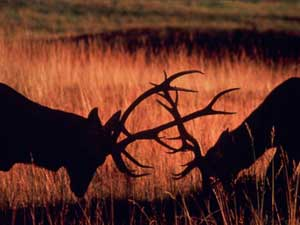
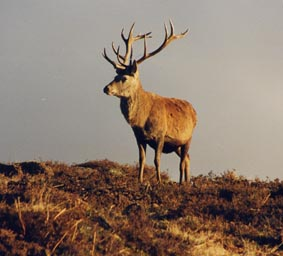

CERVO (RED DEER)

| Climate/Terrain | Foreste e Montagne Temperate |
| Frequency | Uncommon |
| Organization | Branco |
| Activity Cycle | Day |
| Diet | Erbivoro |
| Intelligence | Animal (1) |
| Treasure | Nessuno |
| Alignment | Neutral |
| No. Appearing | 1d6 |
| Armor Class | 8 |
| Movement | 24 |
| Hit Dice | 3 + 1 |
| Thac0 | 17 |
| No. of Attacks | 1 cornata |
| Damage / Attacks | 2d4 |
| Special Attacks | Nessuno |
| Special Defenses | Nessuno |
| Magic Resistance | Nessuna |
| Size | Medium |
| Morale | Unsteady (7) |
| XP value | 120 |
Descrizione
Quest’erbivoro, grazie al portamento elegante e vigoroso, è denominato “re della foresta” o “cervo nobile”. I maschi possono raggiungere una lunghezza testa-corpo di 250 cm, un’altezza alla spalla di 150 cm, un peso di 180-260 kg. Le femmine hanno dimensioni inferiori. Il miglior criterio per distinguere la femmina dal maschio è la presenza in quest’ultimo delle corna o palco. Questo appare più ramificato e più possente in relazione all’età, alla disponibilità di cibo e allo stato di salute dell’animale. Ogni anno il palco è perso e riformato. Il mantello è marrone-rossastro in estate per divenire marrone-grigio e più folto in inverno.
Combat
Il cervo attacca con le sue possenti corna (i danni si considerano da punta) potendo nel caso caricare (si utilizzano le normali regole sulla carica).
Habitat/Society
I cervi vivono in branchi. Il gruppo è guidato da un esemplare dominante. Gli unici individui solitari sono i vecchi cervi. La dieta del cervo comprende erba, germogli, corteccia, aghi di pino ed abete, rami, licheni, frutta e verdura.
Ecology
Il cervo è ricercato come cacciagione. Una cervo intera ha un valore di mercato di 8 - 10 g.p. (il suo palco da solo, una volta ripulito per bene pesa 10 kg. e vale 5 g.p.).
